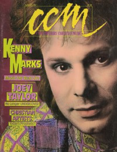

CMnexus
: Contemporary Christian culture, music, and media.
|
CCMAug 1987, vol. 10, iss. 2
| Cover |
|---|
|  | | Writers in this Issue |
|---|
Baker, Paul
Brown, Bruce A.
Donaldson, Devlin
Eischer, Mark
Fischer, John
Frazer, Robyn
Gilland, Elisabeth D
Granger, Thom
Hinchman, Gary J.
Mitchell, Teresa
Newcomb, Brian Quincy
Rabey, Steve
Turner, Wes
Wiebe, Dan
|
Cover Feature:
- "Horizontal Music With a Vertical Connection" by Elisabeth D Gilland
Article:
- "No Longer Undercover" by Brian Quincy Newcomb
Notebook:
- "Bard With A Beat" by Bruce A. Brown
- "A Contemporary Christian Musical" by Robyn Frazer
Toymaker's Dream
- "A Song In Your Heart... and On Your Wall"
Christian music posters
Celebrating Our 10th Year:What's New:In Concert:
- "Miami Metro Fest, Metrozoo, Miami, FL" by Wes Turner
- "Bedford County Fairgrounds, Bedford, PA" by Teresa Mitchell
- "Moore Theatre, Seattle, WA" by Dan Wiebe
Editorials, opinion, and commentary:
- "Christian Artists: Today's Prophets?" by Gary J. Hinchman
John Fischer:
- "Conscious Involvement Paper" by John Fischer
|
|
<>